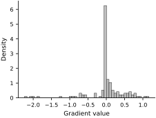
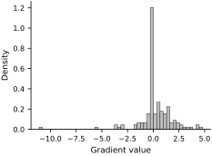
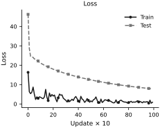
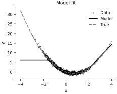

Initialization of Neural Network Parameters#
When it comes to deep neural nets, you should be careful about how you initialize the weights. Bad initialization can lead from not learning at all to vanishing/exploding gradients. Let’s demonstrate this with our trivial example.
This time we are going to make the model a proper neural network. Let’s go with two hidden layers with 10 neurons each. We will use the rectified linear unit (ReLU) activation function for the hidden layers.
class NeuralNetwork(eqx.Module):
layers: list
def __init__(self, key):
key1, key2, key3 = jax.random.split(key, 3)
self.layers = [
eqx.nn.Linear(1, 10, key=key1),
eqx.nn.Linear(10, 10, key=key2),
eqx.nn.Linear(10, 1, key=key3)
]
@partial(jax.vmap, in_axes=(None, 0))
def __call__(self, x):
for layer in self.layers[:-1]:
x = jax.nn.relu(layer(x))
return self.layers[-1](x)
The layers above use Equinox’s default initialization. We will compare explicit Xavier and He scalings below. First, let’s examine a poor initialization. First, set all the weights and biases to the same number, say zero. Recall that JAX models are immutable, so we need to create a new model.
key, subkey = jrandom.split(key)
model = NeuralNetwork(subkey)
# Set all weights and biases to zero
zero_model = jax.tree_util.tree_map(lambda x: jnp.zeros_like(x), model)
# Confirm that everything is set to zero
jax.tree_util.tree_leaves(zero_model)
[Array([[0.],
[0.],
[0.],
[0.],
[0.],
[0.],
[0.],
[0.],
[0.],
[0.]], dtype=float32),
Array([0., 0., 0., 0., 0., 0., 0., 0., 0., 0.], dtype=float32),
Array([[0., 0., 0., 0., 0., 0., 0., 0., 0., 0.],
[0., 0., 0., 0., 0., 0., 0., 0., 0., 0.],
[0., 0., 0., 0., 0., 0., 0., 0., 0., 0.],
[0., 0., 0., 0., 0., 0., 0., 0., 0., 0.],
[0., 0., 0., 0., 0., 0., 0., 0., 0., 0.],
[0., 0., 0., 0., 0., 0., 0., 0., 0., 0.],
[0., 0., 0., 0., 0., 0., 0., 0., 0., 0.],
[0., 0., 0., 0., 0., 0., 0., 0., 0., 0.],
[0., 0., 0., 0., 0., 0., 0., 0., 0., 0.],
[0., 0., 0., 0., 0., 0., 0., 0., 0., 0.]], dtype=float32),
Array([0., 0., 0., 0., 0., 0., 0., 0., 0., 0.], dtype=float32),
Array([[0., 0., 0., 0., 0., 0., 0., 0., 0., 0.]], dtype=float32),
Array([0.], dtype=float32)]
Let’s now demonstrate that this model cannot learn because most of the gradients are zero:
from jax import jit, grad
grad_loss = jit(grad(loss))
g = grad_loss(zero_model, X[:, None], y[:, None])
jax.tree_util.tree_leaves(g)
[Array([[0.],
[0.],
[0.],
[0.],
[0.],
[0.],
[0.],
[0.],
[0.],
[0.]], dtype=float32),
Array([0., 0., 0., 0., 0., 0., 0., 0., 0., 0.], dtype=float32),
Array([[0., 0., 0., 0., 0., 0., 0., 0., 0., 0.],
[0., 0., 0., 0., 0., 0., 0., 0., 0., 0.],
[0., 0., 0., 0., 0., 0., 0., 0., 0., 0.],
[0., 0., 0., 0., 0., 0., 0., 0., 0., 0.],
[0., 0., 0., 0., 0., 0., 0., 0., 0., 0.],
[0., 0., 0., 0., 0., 0., 0., 0., 0., 0.],
[0., 0., 0., 0., 0., 0., 0., 0., 0., 0.],
[0., 0., 0., 0., 0., 0., 0., 0., 0., 0.],
[0., 0., 0., 0., 0., 0., 0., 0., 0., 0.],
[0., 0., 0., 0., 0., 0., 0., 0., 0., 0.]], dtype=float32),
Array([0., 0., 0., 0., 0., 0., 0., 0., 0., 0.], dtype=float32),
Array([[0., 0., 0., 0., 0., 0., 0., 0., 0., 0.]], dtype=float32),
Array([-1.7226758], dtype=float32)]
Why does this happen? The reason is the ReLU function. Recall that ReLU is defined as:
So, if the input is negative, the gradient is zero. This is called the dying ReLU problem. If the input is negative, the gradient is zero and the weights are not updated. This is why the model cannot learn.
The same thing happens in other activation functions if we are not careful. For example, in sigmoid, if the input is too large or too small, the gradient is also zero. We say that the gradients are saturated.
Okay, let’s shift all weights and biases by a bit so that ReLU is not saturated anymore. We can achieve this by adding a small number, say 0.1, to everything:
new_model = jax.tree_util.tree_map(lambda x: 0.1 * jnp.ones_like(x), model)
jax.tree_util.tree_leaves(new_model)
[Array([[0.1],
[0.1],
[0.1],
[0.1],
[0.1],
[0.1],
[0.1],
[0.1],
[0.1],
[0.1]], dtype=float32),
Array([0.1, 0.1, 0.1, 0.1, 0.1, 0.1, 0.1, 0.1, 0.1, 0.1], dtype=float32),
Array([[0.1, 0.1, 0.1, 0.1, 0.1, 0.1, 0.1, 0.1, 0.1, 0.1],
[0.1, 0.1, 0.1, 0.1, 0.1, 0.1, 0.1, 0.1, 0.1, 0.1],
[0.1, 0.1, 0.1, 0.1, 0.1, 0.1, 0.1, 0.1, 0.1, 0.1],
[0.1, 0.1, 0.1, 0.1, 0.1, 0.1, 0.1, 0.1, 0.1, 0.1],
[0.1, 0.1, 0.1, 0.1, 0.1, 0.1, 0.1, 0.1, 0.1, 0.1],
[0.1, 0.1, 0.1, 0.1, 0.1, 0.1, 0.1, 0.1, 0.1, 0.1],
[0.1, 0.1, 0.1, 0.1, 0.1, 0.1, 0.1, 0.1, 0.1, 0.1],
[0.1, 0.1, 0.1, 0.1, 0.1, 0.1, 0.1, 0.1, 0.1, 0.1],
[0.1, 0.1, 0.1, 0.1, 0.1, 0.1, 0.1, 0.1, 0.1, 0.1],
[0.1, 0.1, 0.1, 0.1, 0.1, 0.1, 0.1, 0.1, 0.1, 0.1]], dtype=float32),
Array([0.1, 0.1, 0.1, 0.1, 0.1, 0.1, 0.1, 0.1, 0.1, 0.1], dtype=float32),
Array([[0.1, 0.1, 0.1, 0.1, 0.1, 0.1, 0.1, 0.1, 0.1, 0.1]], dtype=float32),
Array([0.1], dtype=float32)]
Let’s see what the gradients are now:
g = grad_loss(new_model, X[:, None], y[:, None])
jax.tree_util.tree_leaves(g)
[Array([[0.01744955],
[0.01744955],
[0.01744955],
[0.01744955],
[0.01744955],
[0.01744955],
[0.01744955],
[0.01744955],
[0.01744955],
[0.01744955]], dtype=float32),
Array([-0.01413278, -0.01413278, -0.01413278, -0.01413278, -0.01413278,
-0.01413278, -0.01413278, -0.01413278, -0.01413278, -0.01413278], dtype=float32),
Array([[0.00033168, 0.00033168, 0.00033168, 0.00033168, 0.00033168,
0.00033168, 0.00033168, 0.00033168, 0.00033168, 0.00033168],
[0.00033168, 0.00033168, 0.00033168, 0.00033168, 0.00033168,
0.00033168, 0.00033168, 0.00033168, 0.00033168, 0.00033168],
[0.00033168, 0.00033168, 0.00033168, 0.00033168, 0.00033168,
0.00033168, 0.00033168, 0.00033168, 0.00033168, 0.00033168],
[0.00033168, 0.00033168, 0.00033168, 0.00033168, 0.00033168,
0.00033168, 0.00033168, 0.00033168, 0.00033168, 0.00033168],
[0.00033168, 0.00033168, 0.00033168, 0.00033168, 0.00033168,
0.00033168, 0.00033168, 0.00033168, 0.00033168, 0.00033168],
[0.00033168, 0.00033168, 0.00033168, 0.00033168, 0.00033168,
0.00033168, 0.00033168, 0.00033168, 0.00033168, 0.00033168],
[0.00033168, 0.00033168, 0.00033168, 0.00033168, 0.00033168,
0.00033168, 0.00033168, 0.00033168, 0.00033168, 0.00033168],
[0.00033168, 0.00033168, 0.00033168, 0.00033168, 0.00033168,
0.00033168, 0.00033168, 0.00033168, 0.00033168, 0.00033168],
[0.00033168, 0.00033168, 0.00033168, 0.00033168, 0.00033168,
0.00033168, 0.00033168, 0.00033168, 0.00033168, 0.00033168],
[0.00033168, 0.00033168, 0.00033168, 0.00033168, 0.00033168,
0.00033168, 0.00033168, 0.00033168, 0.00033168, 0.00033168]], dtype=float32),
Array([-0.14153771, -0.14153771, -0.14153771, -0.14153771, -0.14153771,
-0.14153771, -0.14153771, -0.14153771, -0.14153771, -0.14153771], dtype=float32),
Array([[-0.13822104, -0.13822104, -0.13822104, -0.13822104, -0.13822104,
-0.13822104, -0.13822104, -0.13822104, -0.13822104, -0.13822104]], dtype=float32),
Array([-1.4153771], dtype=float32)]
Now get non-zero gradients, but we have another problem. Pay attention to the gradients for the weight of a given layer. They are all the same! This is not good. The model will move all the weights in the same direction, which is not what we want. It will never learn anything useful. This is called the symmetry problem. We need to initialize the parameters in a way that breaks the symmetry.
Xavier or Glorot initialization#
The Xavier (or Glorot) initialization was introduced by Glorot and Bengio (2010). The method initializes the weights of a layer with a uniform distribution in the range \([-a, a]\) with \(a\) being:
where \(n_{\text{in}}\) is the number of inputs to the layer and \(n_{\text{out}}\) is the number of outputs from the layer. The weights are initialized by:
The biases are initialized to zero or to a small positive number (if the activation function is ReLU).
Here is how we can do this in JAX:
def random_weight(key, shape, lim):
return jrandom.uniform(key, shape, minval=-lim, maxval=lim)
xavier_model = model
for i in range(3):
# Initialize the weight for layer i
key, subkey = jrandom.split(key)
shape = xavier_model.layers[i].weight.shape
xavier_model = eqx.tree_at(
lambda m: m.layers[i].weight,
xavier_model,
random_weight(
subkey,
shape,
jnp.sqrt(6 / (shape[0] + shape[1]))
),
)
# Set the bias to 0.1
xavier_model = eqx.tree_at(
lambda m: m.layers[i].bias,
xavier_model,
0.1 * jnp.ones_like(xavier_model.layers[i].bias),
)
jax.tree_util.tree_leaves(xavier_model)
[Array([[-0.50944334],
[ 0.6555031 ],
[-0.00895034],
[-0.43670258],
[ 0.29304954],
[-0.68030745],
[-0.38249925],
[ 0.14994344],
[ 0.00321881],
[-0.50308985]], dtype=float32),
Array([0.1, 0.1, 0.1, 0.1, 0.1, 0.1, 0.1, 0.1, 0.1, 0.1], dtype=float32),
Array([[-0.08604445, 0.31424475, -0.426348 , -0.37588376, 0.3140371 ,
-0.1688331 , 0.09420159, 0.43502867, -0.34132618, -0.29280296],
[ 0.00367303, 0.12309872, -0.5208639 , 0.42356023, -0.3674819 ,
-0.4593453 , -0.42880788, 0.04735576, -0.25516003, 0.23702262],
[ 0.19250754, -0.21789095, -0.01405981, -0.5397804 , 0.068449 ,
-0.5366325 , -0.47889748, -0.39644158, -0.2567417 , 0.30210117],
[-0.25991392, -0.46714136, 0.03298216, -0.463268 , -0.5052308 ,
0.27617347, 0.19386812, -0.08710835, 0.19945842, -0.492708 ],
[ 0.35155037, 0.48413482, 0.11518526, 0.19391042, 0.47680247,
0.23148207, 0.5157646 , 0.24907818, 0.2561431 , -0.34929398],
[ 0.02106202, 0.00085979, -0.06889156, 0.38864762, 0.32294342,
0.46142924, 0.03702214, -0.10649637, 0.12446831, -0.35875422],
[-0.03237989, -0.5149289 , -0.5120224 , 0.48348188, -0.20601834,
0.16136809, 0.4194304 , -0.4747332 , -0.2963668 , 0.35028094],
[-0.1811292 , 0.19009532, -0.09496069, 0.5322046 , 0.38390937,
0.35248473, -0.07029759, 0.4338159 , -0.08116023, 0.25242355],
[ 0.06390952, 0.20731677, -0.11841533, 0.06531856, 0.36191508,
-0.17409277, -0.44527075, -0.16163671, -0.42237815, -0.5457413 ],
[-0.5078613 , 0.3665768 , -0.08803865, -0.32729536, 0.4735037 ,
-0.4716059 , -0.12812594, -0.0615186 , 0.52207005, 0.10187084]], dtype=float32),
Array([0.1, 0.1, 0.1, 0.1, 0.1, 0.1, 0.1, 0.1, 0.1, 0.1], dtype=float32),
Array([[-0.17540216, -0.5506448 , -0.12993734, -0.13373846, -0.2996416 ,
-0.423821 , 0.46124196, -0.5193831 , 0.13599743, -0.5925728 ]], dtype=float32),
Array([0.1], dtype=float32)]
Test the gradients:
g = grad_loss(xavier_model, X[:, None], y[:, None])
jax.tree_util.tree_leaves(g)
[Array([[-0.09432621],
[ 0.3311274 ],
[-0.62047035],
[-0.74014306],
[ 0.5136982 ],
[-1.0011775 ],
[ 0.16015121],
[ 0.1695435 ],
[-0.33279976],
[ 0.76980144]], dtype=float32),
Array([ 0.05651332, 0.19020745, 0.30523688, 0.51873463, 0.3130104 ,
0.69955516, -0.11339553, 0.22268894, 0.5663036 , -0.54094684], dtype=float32),
Array([[ 3.25234898e-04, 8.45430866e-02, 5.32228826e-03,
3.36534344e-04, 4.13288102e-02, 3.01692227e-04,
3.41541483e-04, 2.42667142e-02, 6.77317474e-03,
3.26412817e-04],
[ 3.33994649e-05, 2.57810345e-04, 1.29812543e-04,
4.74119734e-05, 1.87988669e-04, 6.90358684e-06,
5.78534891e-05, 1.60421245e-04, 1.32156769e-04,
3.46233792e-05],
[ 0.00000000e+00, 0.00000000e+00, 0.00000000e+00,
0.00000000e+00, 0.00000000e+00, 0.00000000e+00,
0.00000000e+00, 0.00000000e+00, 0.00000000e+00,
0.00000000e+00],
[ 0.00000000e+00, 0.00000000e+00, 0.00000000e+00,
0.00000000e+00, 0.00000000e+00, 0.00000000e+00,
0.00000000e+00, 0.00000000e+00, 0.00000000e+00,
0.00000000e+00],
[ 4.65874285e-01, 1.44598261e-01, 7.23982453e-02,
4.07465607e-01, 7.12193847e-02, 6.03077531e-01,
3.63936394e-01, 4.37617116e-02, 6.51020557e-02,
4.60772842e-01],
[ 6.58944488e-01, 2.04523757e-01, 1.02401927e-01,
5.76330304e-01, 1.00734606e-01, 8.53009284e-01,
5.14760971e-01, 6.18977323e-02, 9.20821428e-02,
6.51729763e-01],
[-7.16884792e-01, -8.24086193e-04, -9.80381668e-02,
-6.26942873e-01, -1.52557436e-03, -9.28153634e-01,
-5.59921682e-01, -4.13337909e-03, -8.29913542e-02,
-7.09028959e-01],
[ 8.07521939e-01, 2.50639081e-01, 1.25491247e-01,
7.06279337e-01, 1.23447977e-01, 1.04534328e+00,
6.30827904e-01, 7.58542791e-02, 1.12844564e-01,
7.98679829e-01],
[-8.87784190e-05, -6.54109418e-02, -3.97361862e-03,
-9.90499611e-05, -3.18974108e-02, -6.69766014e-05,
-1.04057886e-04, -1.86654106e-02, -5.09881554e-03,
-8.98236758e-05],
[ 1.70341239e-03, 2.85852581e-01, 1.84265617e-02,
1.71851844e-03, 1.39974102e-01, 1.67806144e-03,
1.71824533e-03, 8.23773518e-02, 2.33243387e-02,
1.70537678e-03]], dtype=float32),
Array([ 0.06389409, 0.00131537, 0. , 0. , 0.6703196 ,
0.94811785, -0.869713 , 1.1618968 , -0.04801193, 0.22028862], dtype=float32),
Array([[-2.9442209e-01, -1.6041938e-06, 0.0000000e+00, 0.0000000e+00,
-2.0559943e+00, -1.2789649e+00, -1.9997339e+00, -1.8837848e+00,
-1.7772461e-01, -3.3129358e-01]], dtype=float32),
Array([-2.2370713], dtype=float32)]
Another thing that is commonly done is to look at the histogram of the gradient of all parameters:
all_grads = jnp.hstack(
jax.tree_util.tree_map(
lambda p: p.flatten(),
jax.tree_util.tree_leaves(g)
)
)
fig, ax = plt.subplots(figsize=FIGURE_SIZES["half_standard"])
ax.hist(all_grads, bins=50, density=True, color="0.75", edgecolor="black", linewidth=0.4)
ax.set(xlabel="Gradient value", ylabel="Density");

It looks better than before, but it is not perfect. The reason is that Xavier initialization has been designed for sigmoid and tanh activation functions. For ReLU, we need to use a different initialization.
He initialization#
The He initialization was introduced by He et al. (2015). The method initializes the weights of a layer with a uniform distribution in the range \([-a, a]\) with \(a\) being:
where \(n_{\text{in}}\) is the number of inputs to the layer.
The resulting weight variance is \(a^2/3=2/n_{\text{in}}\), the He scaling for a ReLU layer. This differs from the default scaling in equinox.nn.Linear.
We apply it explicitly to the two hidden layers. The scalar output layer has no ReLU, so we keep its Xavier weights. Biases remain at 0.1 in both comparisons.
he_model = xavier_model
for i in range(len(he_model.layers) - 1):
key, subkey = jrandom.split(key)
shape = he_model.layers[i].weight.shape
he_model = eqx.tree_at(
lambda m: m.layers[i].weight,
he_model,
random_weight(subkey, shape, jnp.sqrt(6 / shape[1])),
)
g = grad_loss(he_model, X[:, None], y[:, None])
jax.tree_util.tree_leaves(g)
[Array([[-1.7483829 ],
[-0.09297272],
[-0.3639858 ],
[ 1.2010206 ],
[ 1.4579656 ],
[-0.7270551 ],
[-0.420414 ],
[ 0.7893204 ],
[-1.2079097 ],
[ 0.8756445 ]], dtype=float32),
Array([ 1.2582616 , -0.05648929, -0.24988388, 0.8185597 , -1.0657248 ,
0.63848895, 0.3128867 , 0.5212817 , 0.86819905, 0.5808441 ], dtype=float32),
Array([[ 0.0000000e+00, 0.0000000e+00, 0.0000000e+00, 0.0000000e+00,
0.0000000e+00, 0.0000000e+00, 0.0000000e+00, 0.0000000e+00,
0.0000000e+00, 0.0000000e+00],
[ 2.5375388e-03, 1.6059752e+00, 7.6550478e-01, 1.3673499e+00,
2.5043450e-03, 5.8517158e-03, 3.1409094e-03, 2.2433267e+00,
2.9869687e-03, 1.5805918e+00],
[ 1.7508921e-03, 3.7416364e-03, 2.2506623e-03, 3.3016263e-03,
1.7077397e-03, 1.2729429e-03, 2.5211344e-03, 4.9282755e-03,
2.3270564e-03, 3.6945287e-03],
[ 6.2087172e-01, 3.9005286e-01, 1.8592612e-01, 3.3209652e-01,
5.9491479e-01, 8.4313594e-02, 1.0823088e+00, 5.4485071e-01,
9.6637130e-01, 3.8388777e-01],
[ 1.3910658e+00, 7.2078023e-04, 8.4584864e-04, 7.1750360e-04,
1.3329084e+00, 1.8677911e-01, 2.4249184e+00, 7.5602985e-04,
2.1651587e+00, 7.1973010e-04],
[ 1.9675584e+00, 1.2360891e+00, 5.8920521e-01, 1.0524238e+00,
1.8853014e+00, 2.6719213e-01, 3.4298682e+00, 1.7266462e+00,
3.0624583e+00, 1.2165515e+00],
[-5.7006843e-04, -1.3451549e+00, -6.4081556e-01, -1.1452360e+00,
-5.7481322e-04, -4.0202057e-03, -4.9684622e-04, -1.8790836e+00,
-5.1328144e-04, -1.3238888e+00],
[ 2.4112005e+00, 1.5147995e+00, 7.2205734e-01, 1.2897221e+00,
2.3103957e+00, 3.2743803e-01, 4.2032256e+00, 2.1159668e+00,
3.7529755e+00, 1.4908564e+00],
[-9.8220058e-05, -3.9659145e-01, -1.8890405e-01, -3.3764154e-01,
-1.0043926e-04, -1.1324815e-03, -6.2048966e-05, -5.5402982e-01,
-7.0558483e-05, -3.9032093e-01],
[ 2.7509782e+00, 1.8291865e-03, 1.9385774e-03, 1.7835528e-03,
2.6359694e+00, 3.6950806e-01, 4.7955308e+00, 2.0034665e-03,
4.2818298e+00, 1.8229450e-03]], dtype=float32),
Array([ 0. , 0.63827044, 0.01390426, 0.47009698, 0.7162182 ,
1.4897506 , -0.526471 , 1.8256557 , -0.15471771, 1.4179033 ], dtype=float32),
Array([[ 0.0000000e+00, -3.2412422e+00, -8.2612373e-03, -3.5861137e+00,
-1.3043489e+00, -5.6148190e+00, -2.8548265e+00, -1.1103797e+01,
-2.9904559e+00, -7.7309060e-01]], dtype=float32),
Array([-3.5150461], dtype=float32)]
all_grads = jnp.hstack(
jax.tree_util.tree_map(
lambda p: p.flatten(),
jax.tree_util.tree_leaves(g)
)
)
fig, ax = plt.subplots(figsize=FIGURE_SIZES["half_standard"])
ax.hist(all_grads, bins=50, density=True, color="0.75", edgecolor="black", linewidth=0.4)
ax.set(xlabel="Gradient value", ylabel="Density");

The histogram shows the gradient scales for this particular initialization. A wider histogram alone does not establish that an initialization is better.
You should use He initialization for ReLU and Xavier initialization for sigmoid and tanh. You should prefer He initialization for deeper networks. But at the end of the day, these are just rules of thumb. You should always look at your gradient histograms and make sure that they are not too peaked at zero.
Let’s finish up by seeing how our network can learn:
model, path, losses, test_losses = train_batch(
he_model,
X[:, None], y[:, None],
optax.adam(0.01),
X_test[:, None], y_test[:, None],
n_batch=100,
n_epochs=100,
freq=10,
)
Here is the evolution of the loss:
fig, ax = plt.subplots(figsize=FIGURE_SIZES["half_standard"])
markevery = max(1, len(losses) // 12)
ax.plot(losses, color="0.10", linestyle="-", marker="o", markevery=markevery, markersize=3, label="Train")
ax.plot(test_losses, color="0.45", linestyle="--", marker="s", markevery=markevery, markersize=3, label="Test")
ax.set(xlabel="Update $\\times$ 10", ylabel="Loss", title="Loss")
plt.legend(loc='best', frameon=False)
finalize_axes(keep_box=False)
array([<Axes: title={'center': 'Loss'}, xlabel='Update $\\times$ 10', ylabel='Loss'>],
dtype=object)

Let’s make some predictions:
xs = jnp.linspace(-4, 4, 100)
fig, ax = plt.subplots(figsize=FIGURE_SIZES["half_standard"])
ax.scatter(X, y, color='black', label="Data", alpha=0.5, s=2)
ax.plot(xs, model(xs[:, None]).flatten(), color="black", label="Model")
ax.plot(xs, 1.5 * xs ** 2 - 2 * xs, '--', color="0.5", label="True")
ax.set(xlabel="x", ylabel="y", title="Model fit")
plt.legend(loc='best', frameon=False)
finalize_axes(keep_box=False)
array([<Axes: title={'center': 'Model fit'}, xlabel='x', ylabel='y'>],
dtype=object)

The network fits the central part of the data but misses the negative tail in this run. He initialization controls the initial weight variance; it does not guarantee that all ReLU units remain active or that the trained model fits well. The held-out predictions still need checking. For this quadratic data-generating model, polynomial regression would be a simpler choice.